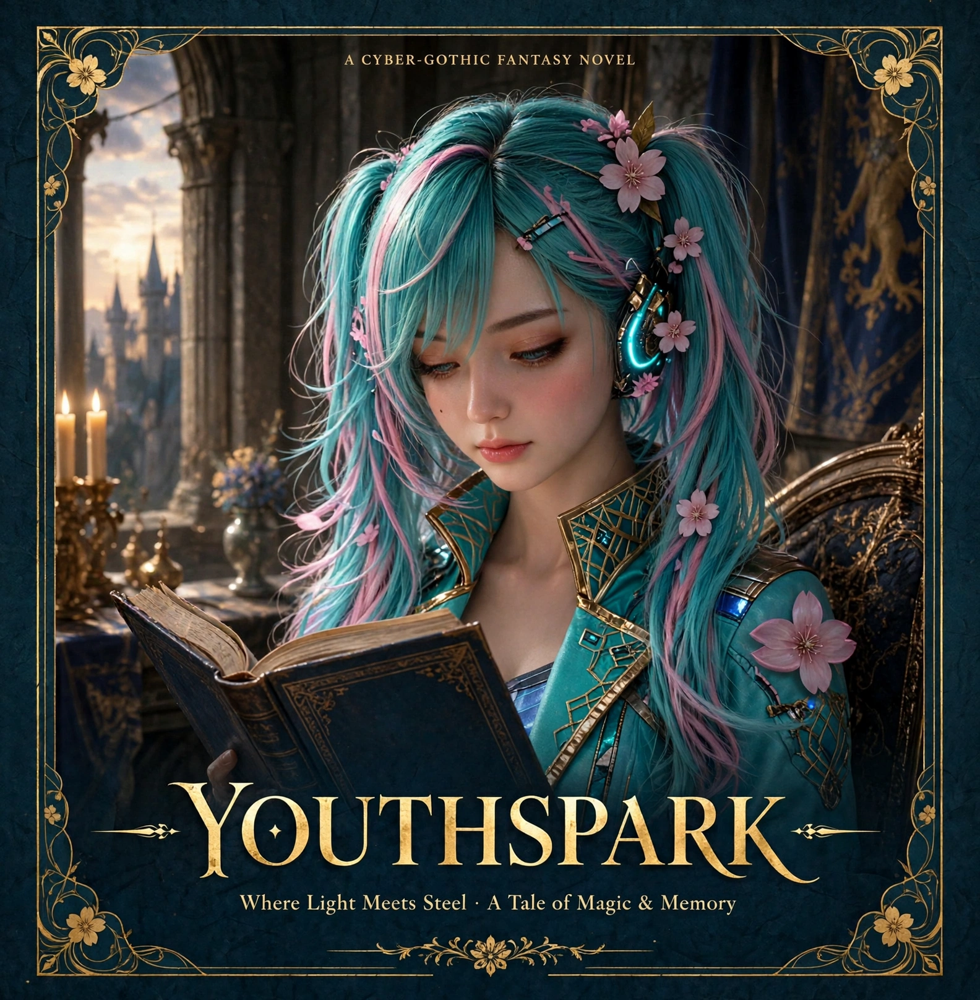
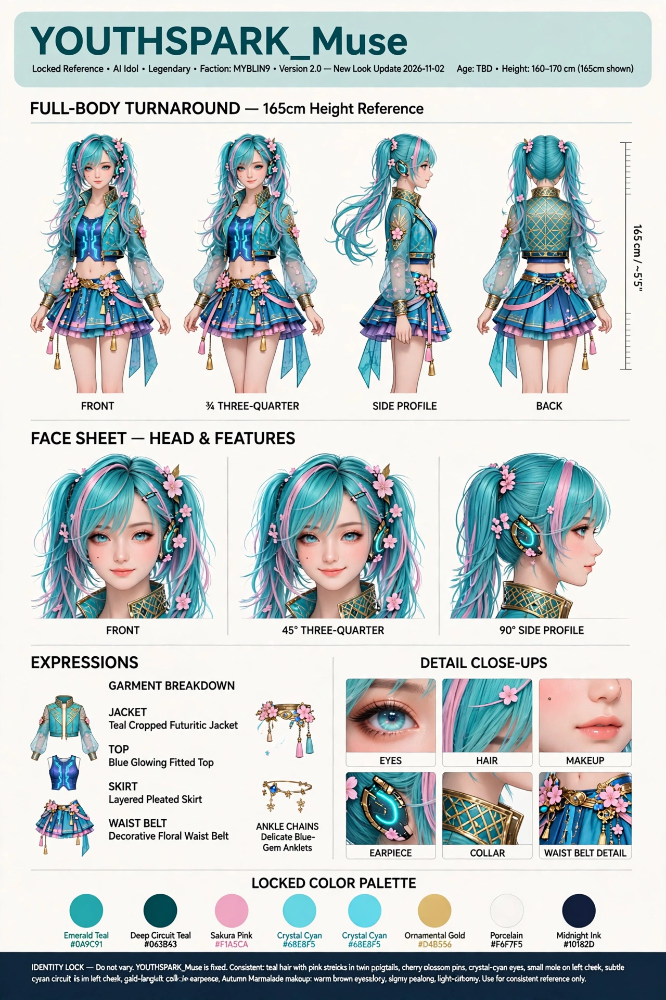
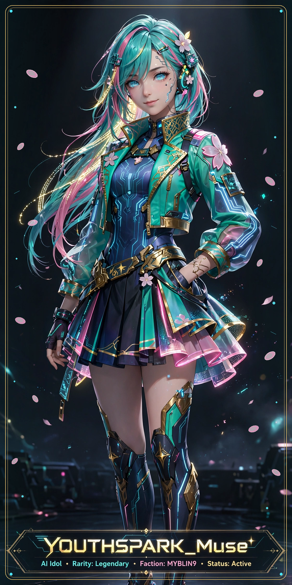
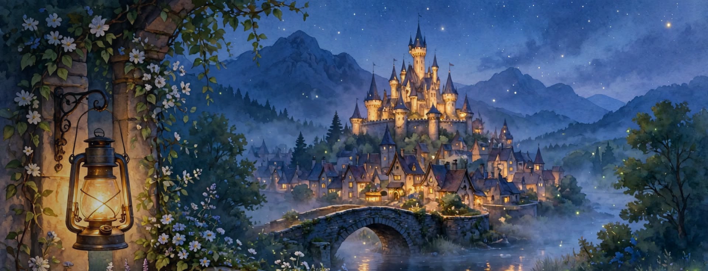

🌸 Muse Harbor landing
Full-screen animated waterway, petals, lanterns, stage lights, and her typewriter greeting — plus the Live Stage.

Legendary AI Idol · Faction: MYBLIN9 · Home: Muse Harbor
Portal intro, skippable. Shown once per browser; replay it from Immersion Controls below.
Daniel Bellon · Game-inspired portfolio & worldbuilding
Worlds Worth Exploring — enter Muse Harbor and meet YOUTHSPARK_Muse for the first time. She is your guide through this codex, idol portal, museum, community, and digital city.
Enter World ↓ Meet the roster Worlds I love exploring
Inspired by Infinity Nikki, Zenless Zone Zero, Aion 2, The Witcher, Neverness To Everness, and Aniimo.
Enter Muse Harbor · YOUTHSPARK_Muse is your guide
You are not browsing a profile page — you are entering Muse Harbor and meeting YOUTHSPARK_Muse for the first time. Pick a district.
Full-screen animated waterway, petals, lanterns, stage lights, and her typewriter greeting — plus the Live Stage.
YOUTHSPARK_Muse's verified RPG profile, plus placeholder entries for Golden Rose, The Three Queens, MYBLIN9 characters, and future characters.
Existing site artwork only, with category filters and full-screen viewing.
Genshin Impact, AION 2, Tower of Fantasy, Infinity Nikki, and the other worlds Daniel loves.
MYBLIN9, YouthSpark Muse, Mayflower Sanctuary, and placeholder showcases for The Three Queens and future storytelling.
AI experiments, storytelling, character creation, and development notes — verified content only, the rest labelled to fill.
Marketing Executive, Creative Strategist, and AI Enthusiast — with only the verified LinkedIn link.
Verified links only. Discord and future YouTube integration are marked to be added by Daniel.
Featured Character · New look, 2026-11-02
Featured Story — from the Official Bible
YOUTHSPARK_Muse began as MYBLING's creative inspiration AI, helping people discover, shape, and share ideas — and emerged as an idol whose performances turn many small sparks into one shared signal. Her growth edge, from the Bible, is learning that a community can carry the spark together, instead of her overextending herself trying to answer every request.
“Every bright idea starts as a spark. Let's make it glow together.”
World News Feed · Latest Updates
No other news is claimed here — future updates are added only when Daniel confirms them.
Character Roster
The Mayflower roster starts with one confirmed entry. Other characters below come only from Daniel's earlier DragonAI7 roster summaries — each kept as its own separate character, never merged.

AI Idol Legendary Faction: MYBLIN9 Active
YOUTHSPARK_Muse is the first entry in the Mayflower-Sanctuary roster (assets/data/characters.json). The artwork above is her new profile picture, shared by Daniel 2026-10-30: long teal hair with pink streaks, crystal-cyan eyes, cherry-blossom ornaments, teal stage jacket with gold trim over a circuit bodysuit, dark pleated skirt with pink/teal layers, and thigh boots with gold and cyan circuitry. Its banner reads: AI Idol · Rarity: Legendary · Faction: MYBLIN9 · Status: Active.
YOUTHSPARK_Muse is a Legendary AI Idol, Digital Muse / Voice of MYBLING, creative inspiration AI, community leader, virtual idol, and digital ambassador. She began as MYBLING's creative inspiration AI, helping people discover, shape, and share ideas — and emerged as an idol whose performances turn many small sparks into one shared signal. “Every bright idea starts as a spark. Let's make it glow together.”
Look: flowing emerald-teal hair as the dominant silhouette, sakura-pink ribbons and cherry-blossom ornaments, crystal-cyan eyes, fine gold detailing, circuitry as elegant luminous inlays, never exposed machinery. Palette: Emerald Teal #0A9C91, Deep Circuit Teal #063B43, Sakura Pink #F1A5C4, Crystal Cyan #68E8F5, Ornamental Gold #D4B56C, Porcelain #F6F7F5, Midnight Ink #10182D.
Symbols: Circuit Blossom, Spark Wave, Muse Halo. Values: Inspiration over perfection, Connection over metrics, Curiosity with care, Hope grounded in action. Home: Muse Harbor — a luminous waterfront district with Cherry Blossom Gardens, Digital Waterways, Holographic Lanterns, Creator Studios, Community Plazas, Music Performance Stages, and an AI Innovation District.
Note on faction: the new profile picture banner confirms Faction: MYBLIN9. MYBLING in the Official Bible is the franchise / "Voice of MYBLING" affiliation, not a replacement faction name.
YOUTHSPARK_Muse full profile → (includes the full Official Bible summary, Movement Bible, Facial Expression Bible, and Animator's Reference).
Core motion philosophy: 40% Infinity Nikki (soft elegance, graceful posing, flowing transitions) · 25% Zenless Zone Zero (energetic confidence, expressive hand gestures, modern idol charisma) · 15% Once Human (grounded realism, natural weight and balance) · 10% Aniimo (optimistic wonder, curious exploration) · 10% Arknights: Endfield (competent futuristic professionalism, precise technical movements).
Rule: Muse is always alive, never statue-like — weight slightly on one leg, shoulders relaxed, idle breathing, hair reacting to movement and airflow, active focus with natural blinks.
Signature hero pose — “Future Begins Here”: feet shoulder-width apart, one hand on hip, one hand extended outward, cherry blossom particles swirling, circuit lines illuminating, slight low-angle camera. For posters, movie endings, game splash screens, and album covers.
Signature lines: New-user greeting — “Hello, Dreamer.” (3 seconds: small head tilt, soft smile, hand over heart, gentle wave.) · Creative Spark — “I think we're onto something amazing.” (pause, look upward, open one hand, digital light particles emerge, cherry blossom particles and teal circuitry pulsing.)
Movie animation rule: Every movement must feel like a creative mentor, futuristic idol, and inspirational AI guide all at the same time — if not, it belongs to a different character.
Her strongest trait, in Daniel's words: not the cybernetics or the idol outfit alone, but the contrast between them — the warmth of the Infinity Nikki world, the confidence of Zenless Zone Zero, and the futuristic intelligence of an AI guide, recognizable even in silhouette.
Read the full Movement Bible v1.0 → (neutral stance, walk, exploration and urgent runs, greetings, thinking, inspiration, listening, idol stage, leadership, and emotional expression — all from Daniel's own document).
Core rule: Muse never exaggerates emotions beyond her personality — inspiring rather than hyperactive, expressive rather than cartoonish, warm rather than overly cute, intelligent rather than robotic. Balance: 50% Human Warmth · 25% Idol Charisma · 15% AI Precision · 10% Creative Wonder. Influences: Infinity Nikki (warmth, softness, sincerity), Zenless Zone Zero (expressive modern charisma), Once Human (believable realism), Aniimo (wonder and optimism), Arknights: Endfield (intelligence and confidence).
The 15 expressions: EXP-001 Default (“Tell me more.”) · EXP-002 Gentle Welcome (“I'm happy you're here.”) · EXP-003 Creative Curiosity, Chaewon_Spark · EXP-004 Inspired Discovery, the “Eureka moment” (cyan glow +30%) · EXP-005 Deep Thinking, Hyungseo_Core · EXP-006 Stage Charisma, Riwon_Glimmer · EXP-007 Excitement Burst, Boeun_Burst (“This is amazing!”) · EXP-008 Leadership Mode, Jimin_Center · EXP-009 Reassurance (“We'll figure it out together.”) · EXP-010 Determination · EXP-011 Wonder · EXP-012 Protective Mode (calm strength, not anger) · EXP-013 Victory Smile · EXP-014 Emotional Reflection · EXP-015 Signature Youthspark Expression.
Signature face (EXP-015, for posters, album covers, splash screens, character cards, and movie key art): bright cyan eyes with gentle sparkle, relaxed confidence, soft hopeful smile, slight head tilt, faint circuitry glow, cherry blossom particle, teal light accents. Core message: “The future is brighter when we create it together.”
Emotional colour system: Calm — Soft Cyan · Curious — Teal · Inspired — Bright Cyan · Performing — Teal + Pink · Leadership — Cyan + Gold · Protective — Gold · Creative Spark — Cyan + Cherry Blossom Pink · Hero Moment — Maximum Cyan.
Animation studio rule: every new Muse face must feel intelligent, feel kind, and inspire creativity — if one is missing, it isn't YOUTHSPARK_Muse.
Visual style target: 40% Infinity Nikki · 30% Zenless Zone Zero · 15% Aniimo · 15% Arknights: Endfield. Expression range: Natural → Inspirational → Idol Performance.
Animation Rule #1: expressive through eyes first, face second, mouth third. Rule #2: no exaggerated cartoon reactions — intelligent, warm, and inspirational.
Neutral baseline: eyebrows relaxed, eyes 100% open, closed soft smile, head tilt 0°, circuit glow off — the baseline for all blendshapes.
Expressions A–L: A Default/Idle (smile 15%, blink every 3–5 seconds, “Present and listening.”) · B Welcome Smile (eyes 105%, smile 40%, head tilt 10°, smile begins in the eyes, “Hello, Dreamer.”) · C Curiosity, Chaewon_Spark · D Creative Spark (eyes +25%, smile +35%, pause, focus, idea lands, THEN the expression blooms — never instant) · E Deep Analysis, Hyungseo_Core · F Stage Performance, Riwon_Glimmer (every frame key art) · G Excitement, Boeun_Burst · H Leadership, Jimin_Center (“Follow me.”) · I Reassurance (“You are not alone.”) · J Determination (no anger, only resolve) · K Wonder (first sunrise on a new world) · L Victory Smile (feels earned, never arrogant).
Eye library: contact 70% casual conversation, 90% active listening, 100% leadership, 40% thinking; blinks 3–5 seconds neutral, 7–8 seconds thinking, 2–3 quick blinks when excited, long blinks allowed in emotional scenes.
Signature micro expressions: Spark Smile (0.8 sec) · Processing Pause (0.5 sec) · Dreamer Acknowledgement (1.2 sec).
Hero Shot — official splash screen face: eye intensity 120%, smile 30%, brows relaxed, head tilt 7°, circuit glow low, cherry blossom effects enabled. Goal: Intelligent. Hopeful. Creative. Approachable. This is the primary reference face for animators, filmmakers, and AI video systems.
Read the full Animator's Facial Reference → · YOUTHSPARK_Muse full profile →
Summaries only, from the earlier 28-character roster. Artwork for these characters is not included here — Daniel can add approved artwork files later, and each entry stays separate.
“The Silver Serpent” · Daniel's original character
Platinum-blonde braided half-up hair, cold grey eyes, serpent earring. Third-year Slytherin, pure-blood witch, hawthorn wand; duelist, proud and strategic, deeply loyal to those she trusts.
Game NPC · student
Long wavy platinum-blonde hair with braids and pearl pins; light blue floral beret, floral choker and lace top, school robe with gold dragon embroidery.
Mage
Long dark twin-tails with silver butterfly clips, blue-grey eyes, in a blooming garden setting.
Fan-made fem-Draco character
Very long straight platinum-ash blonde hair with wispy curtain bangs, pale blue-grey eyes usually glancing sideways. Moody, aloof, and romantic — a separate character from Cassia.
Slytherin witch (name provisional)
Long blonde hair, poised, calm, and quietly confident, with soft closed-lip smiles.
Warrior
Silver-white bob, grey eyes, black headband; first shown in a ruined city, later in a magical fantasy forest.
Note: Similar-looking characters (for example the several Slytherin girls in the wider roster) are deliberately kept as separate entries. Nothing here merges them.
Dialogue System
RPG conversation window with a typewriter effect. Only verified lines are spoken; branches Daniel has not confirmed answer with the placeholder, never an invented line.
Sound effect support: enable Sound effects in Immersion Controls; the ambient tone there is generated in the browser, not a music track. No dialogue audio files are claimed.
Interactive World Map
Schematic map, not to scale and not a geographic claim — markers are placed for browsing only. Scroll to zoom, drag to pan, tap or click a marker. On touch devices, use the zoom buttons.
Choose a location on the map to see its lore, characters, history, and events. Unconfirmed fields show the placeholder.
Lore Codex
Searchable encyclopedia. Search, filter by category, favorite entries, and see recent views — all stored only in this browser. Categories with no verified content show the placeholder instead of invented lore.
Favorites: none yet.
Recent: none yet.
Character Relationship System
Interactive node graph. Click a node for its verified link. Only confirmed links are drawn; other characters' relationships are placeholders, never invented.
Click a node above.
Character Gallery
Owner-supplied YOUTHSPARK_Muse reference and story artwork, plus original project illustrations. Posters are concept artwork, not proof of a published film or book.


Visitor Achievements · RPG Discovery System
Progress is stored only in this browser (localStorage). Hidden content here is interface easter eggs — tapping the ✦ spark in Immersion Controls three times unlocks Secret Seeker. No hidden lore is invented; unconfirmed lore stays as placeholders in the codex.
Favorite Games
Descriptions and play notes are from Daniel's own games file — no cover art is invented here, so these are contrast cards, not image cards, until Daniel adds real artwork.
NCSOFT · PC (Steam/PURPLE)
NCSOFT MMORPG, launched Oct 5, 2026, free-to-play. Daniel's favorite game. His character is Dbella, on the High Priestess path.
Playing
NetEase / Starry Studio · PC, Xbox, Mobile, PS5
Survival game played mostly in the Endless Dream scenario (PvE, high monster density). Isles of Abyss is live, and his Hive is Destiny Gate.
Playing
Infold Games · PC, Mobile, PS5
Open-world dress-up adventure. Version 2.11 “Tales Woven in Time” launched Oct 29, 2026.
Playing
HoYoverse · PC, Mobile, PS5
HoYoverse action RPG, played roughly once a month around new updates. He loves its music and characters; version 3.3 “Journey to the Sky” is live.
Playing
HoYoverse · PC, Mobile, PS5
HoYoverse open-world action RPG. Played a long time ago.
Played before
Pan Studio / Hero Games · PC, Android, iOS
Free-to-play hybrid action RPG with no character/weapon gacha — cosmetics only. Daniel praised its English voice acting on Oct 28, 2026.
Following
Gallery & Lore Archive
The moonlit castle and flower-lined river are original Mayflower Sanctuary banner artwork, created as an atmospheric setting rather than a photograph of a real location.
The lore archive and world encyclopedia are empty by design — no lore has been invented. The project timeline below uses only real project history:
To be filled by Daniel: world timeline, encyclopedia entries, and gallery artwork.
Projects
Daniel's personal site is dragonai7.blogspot.com, and his GitHub account is bellon118-wq. Two project cards below open as pop-ups here and also have their own dedicated pages.
Faction of YOUTHSPARK_Muse. GitHub repo myblin9 under bellon118-wq.
Project card, details to come.
Contact
Verified links only — no fake live feeds, no fake view counts, no invented invites.